The Colonial Era & Birth of American Distilling
Colonists turned New World grain into whiskey: rye in the North, corn in the South.
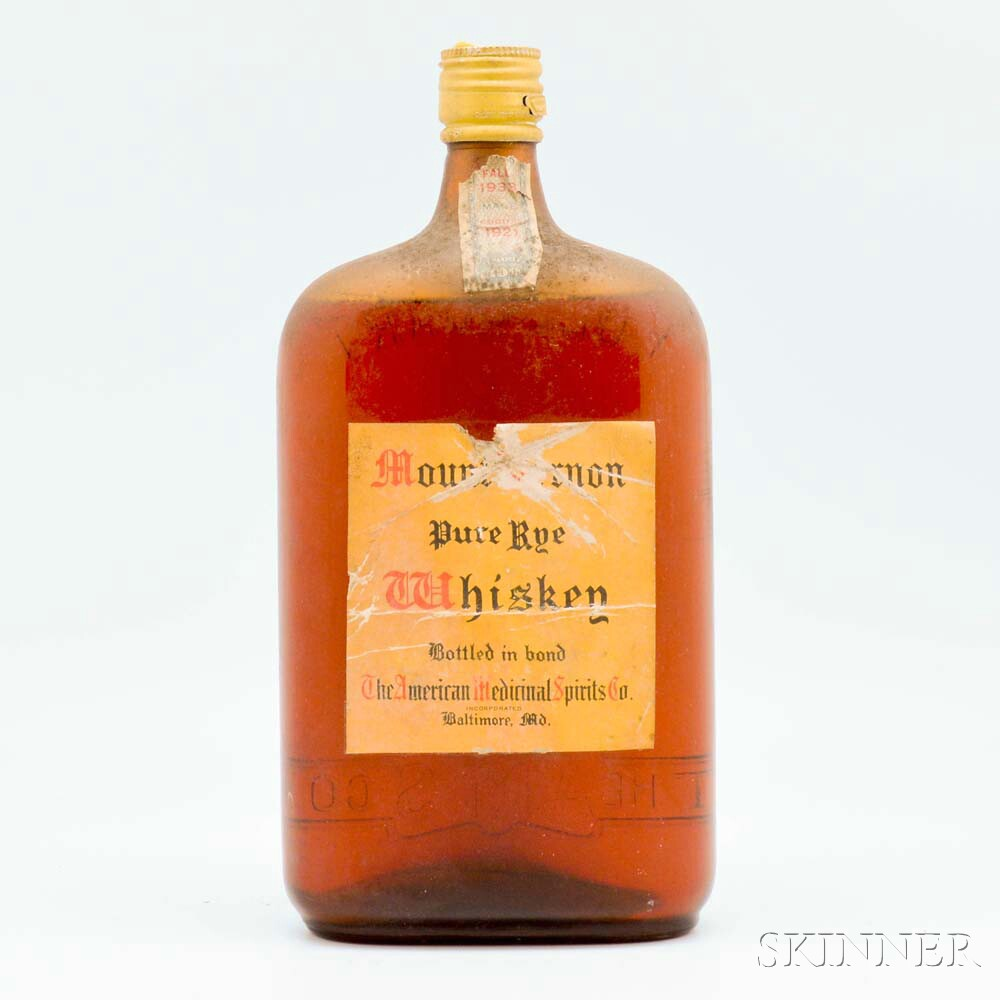
George Washington / Mount Vernon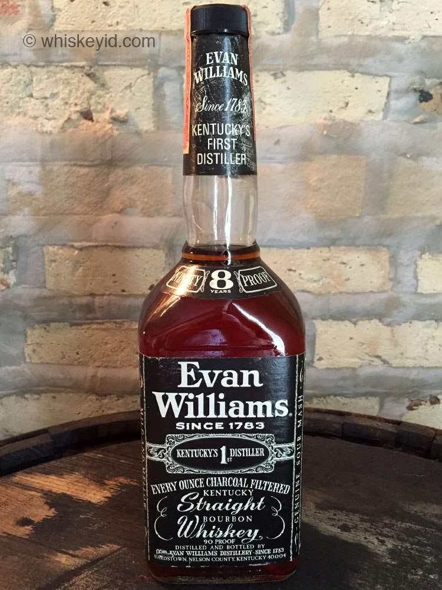
Evan Williams RHRobert Hare, PhiladelphiaThe full story
European colonists adapted Old World distilling to New World grain — rye in the North, corn in the South. George Thorpe is traditionally credited with an early corn distillate in Virginia around 1620, though the record is thin. By the late 1700s, Monongahela rye dominated the Mid-Atlantic; George Washington's Mount Vernon distillery alone produced 11,000 gallons in 1799.
Key producers
- George Washington / Mount Vernon: Rye Whiskey (est. 1797)
- Evan Williams: Corn Whiskey, Louisville KY (est. ~1783)
- Robert Hare, Philadelphia: Rye Whiskey & Porter
Terms
- Corn distillate
- An unaged spirit distilled from fermented corn mash — the earliest form of American whiskey, before barrel aging and formal standards.
- Monongahela rye
- Straight rye whiskey from western Pennsylvania's Monongahela River Valley. The dominant American whiskey style before bourbon's rise — bold, spicy, and earthy.
The Whiskey Rebellion & Westward Migration
Hamilton's 1791 whiskey tax sparked an armed rebellion. Many distillers moved to Kentucky, with its cheap corn, limestone water and charred oak.
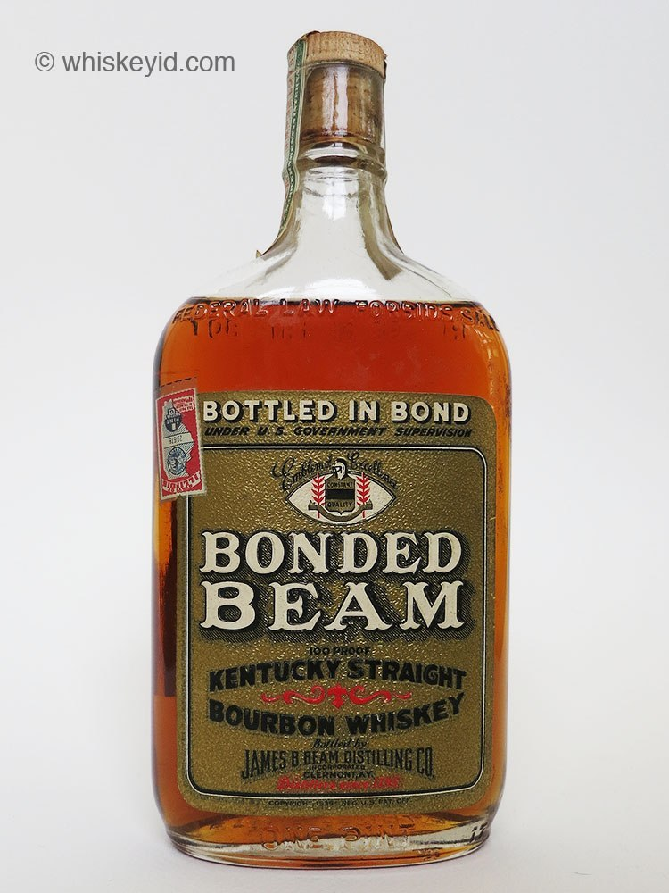
Jacob Beam AEAlfred Eaton, Lincoln County TN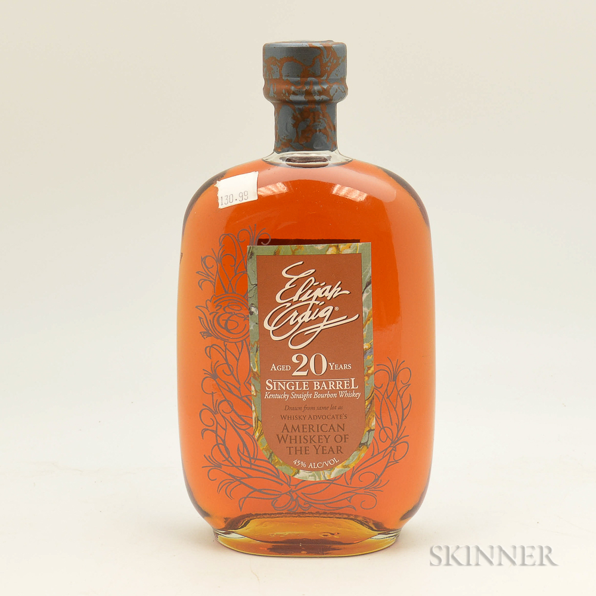
Elijah CraigThe full story
Hamilton's 1791 excise tax ignited the Whiskey Rebellion — Pennsylvania farmers refused to pay and took up arms, and Washington dispatched 13,000 militia. Many distillers fled south into Kentucky instead, bringing their expertise to a place with cheap corn, limestone-filtered water, and charred oak — the ingredients of something entirely new. Congress repealed the tax in 1802, but by then bourbon's seeds were already planted.
Figures like Elijah Craig are often called bourbon's "inventor," but historians treat this as folk history — the style emerged gradually across many distillers, not one origin point.
Key producers
- Jacob Beam: Old Jake Beam Sour Mash (est. 1795)
- Alfred Eaton, Lincoln County TN: Attributed: early charcoal-filtered Tennessee whiskey, c. 1820 (historically debated)
- Elijah Craig: Bourbon Whiskey, Kentucky
Terms
- Limestone-filtered water
- Water naturally filtered through limestone bedrock, which removes iron (that discolors whiskey) while adding calcium and magnesium. Kentucky's limestone aquifer is considered ideal for bourbon production.
- Charred oak
- New American oak barrels burned on the interior to create a char layer. The char filters sulfur compounds while the wood imparts vanilla, caramel, and spice — required by law for bourbon production.
Rise of Bourbon & the Sour Mash Revolution
Barrels aged on the river trip south, and drinkers began asking for Bourbon County whiskey by name.
 Old Crow Distillery
Old Crow Distillery
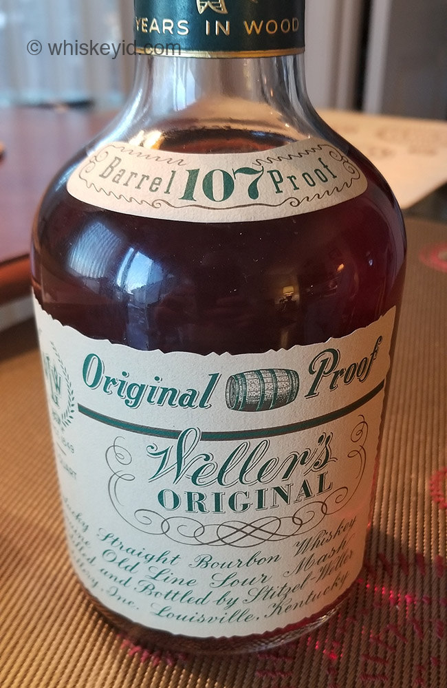
W.L. Weller & Sons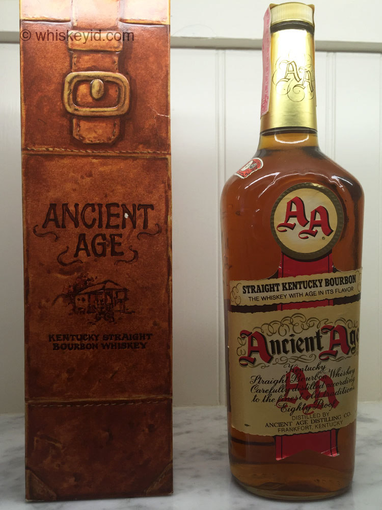
Buffalo Trace (Leestown)The full story
Bourbon barrels shipped down the Ohio and Mississippi rivers were inadvertently aged in transit — drinkers started requesting "that old Bourbon County whiskey" by name. In 1823, Scottish chemist Dr. James Crow brought scientific rigor to the sour mash process at what's now Woodford Reserve, using litmus tests to achieve repeatable consistency.
Key producers
- Old Crow Distillery: Old Crow Bourbon (Dr. Crow's sour mash)
- W.L. Weller & Sons: Wheated Bourbon (est. 1849)
- Buffalo Trace (Leestown): Various straight bourbons
Terms
- Sour mash
- A process where spent mash ("backset") from a previous distillation is added to the new fermentation. Controls pH, prevents bacterial contamination, and ensures consistency from batch to batch.
Civil War, Cocktail Culture & the Gilded Age
The Civil War spread bourbon nationwide while rye fueled New York's cocktails. Old Forester (1870) was the first bourbon sold only in sealed bottles.
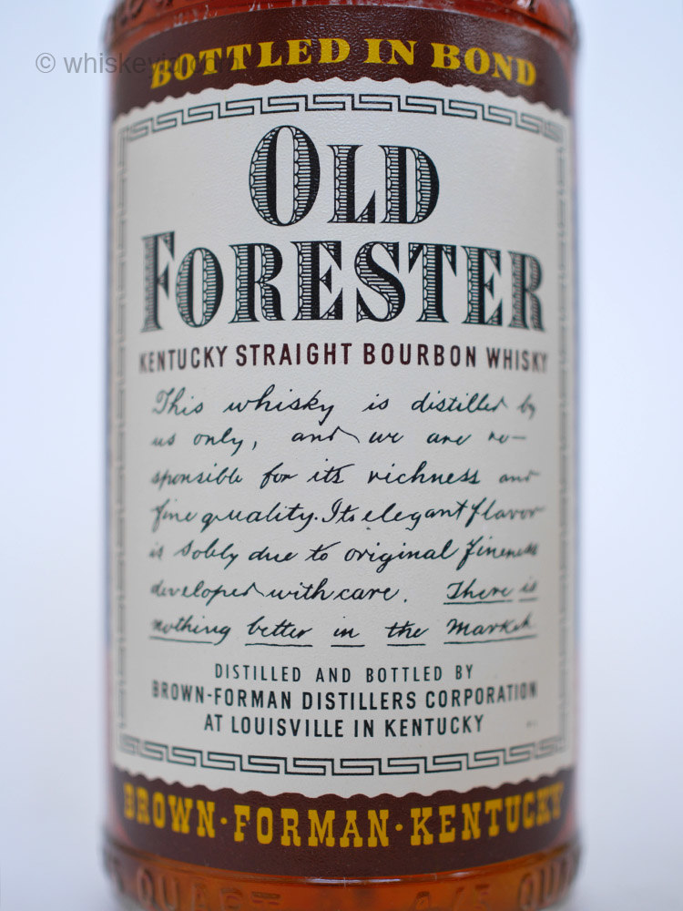
Brown-Forman / George G. Brown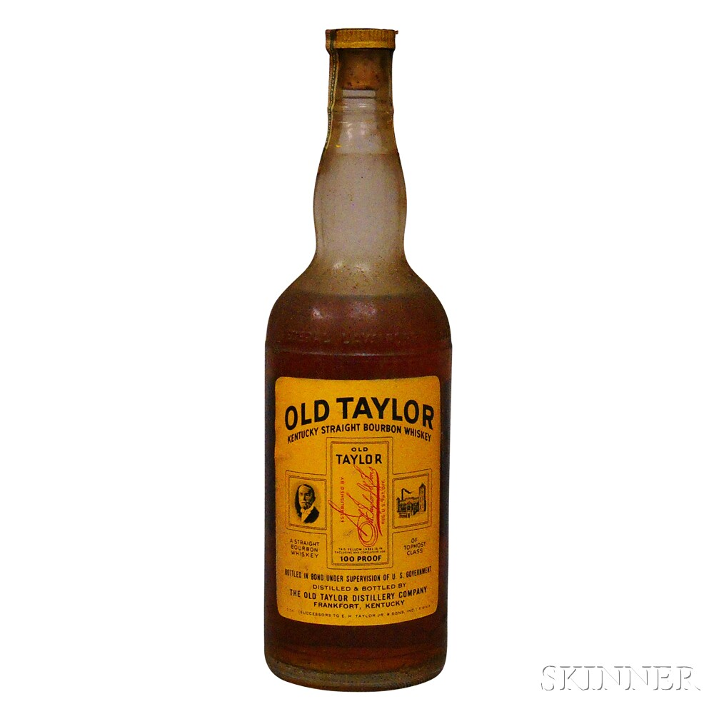
E.H. Taylor Jr.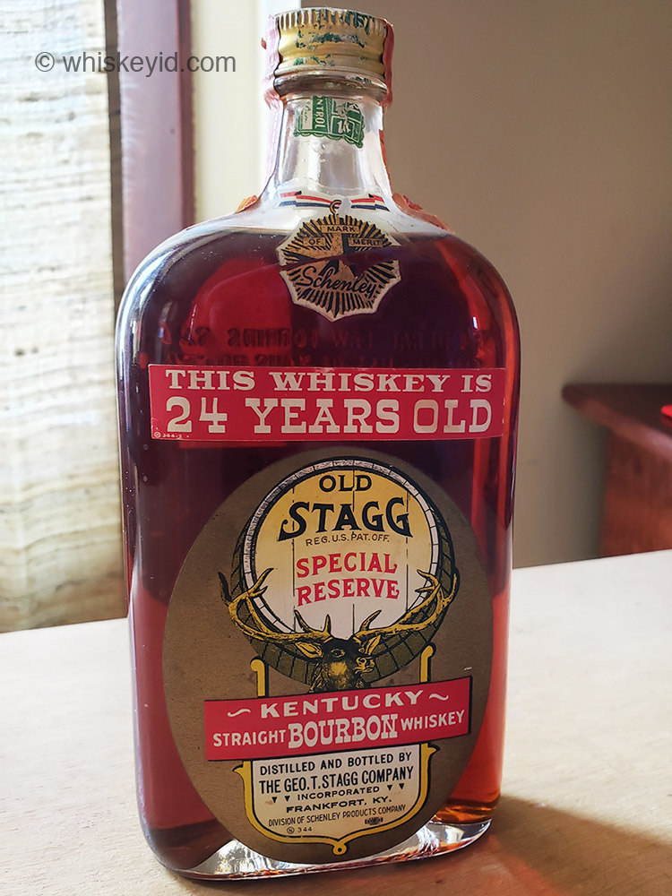
George T. Stagg Distillery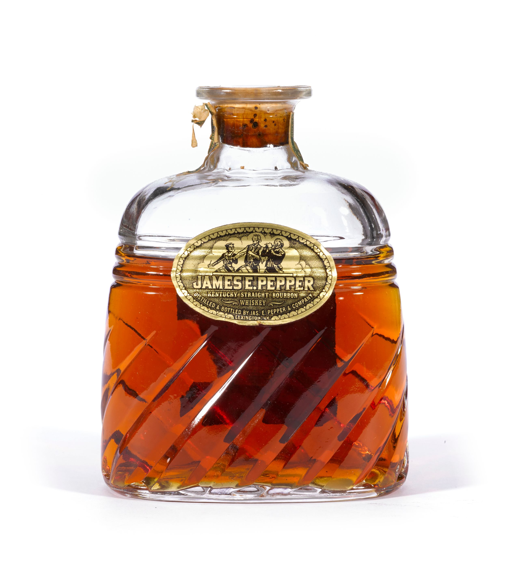
James E. Pepper DistilleryThe full story
The Civil War exposed bourbon to soldiers nationwide, while New York's cocktail culture — Manhattans, Old Fashioneds, Whiskey Sours — was built almost entirely on rye. Old Forester launched in 1870 as the first bourbon sold exclusively in sealed bottles; E.H. Taylor Jr. modernized production with bonded warehouses.
Key producers
- Brown-Forman / George G. Brown: Old Forester Bourbon (est. 1870)
- E.H. Taylor Jr.: Old Taylor Bourbon, Old Crow
- George T. Stagg Distillery: George T. Stagg Bourbon
- James E. Pepper Distillery: Pepper Rye & Bourbon
Terms
- Bonded warehouse
- A federally supervised warehouse where whiskey ages under U.S. government oversight. Required for Bottled-in-Bond designation — the government bond guarantees authenticity.
Bottled-in-Bond Act & the Last Golden Age
The Bottled-in-Bond Act of 1897 fought adulterated whiskey, becoming the first federal consumer protection law for spirits.
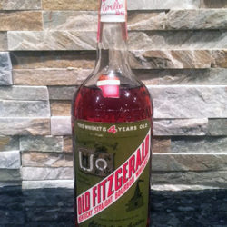
A. Ph. Stitzel Distillery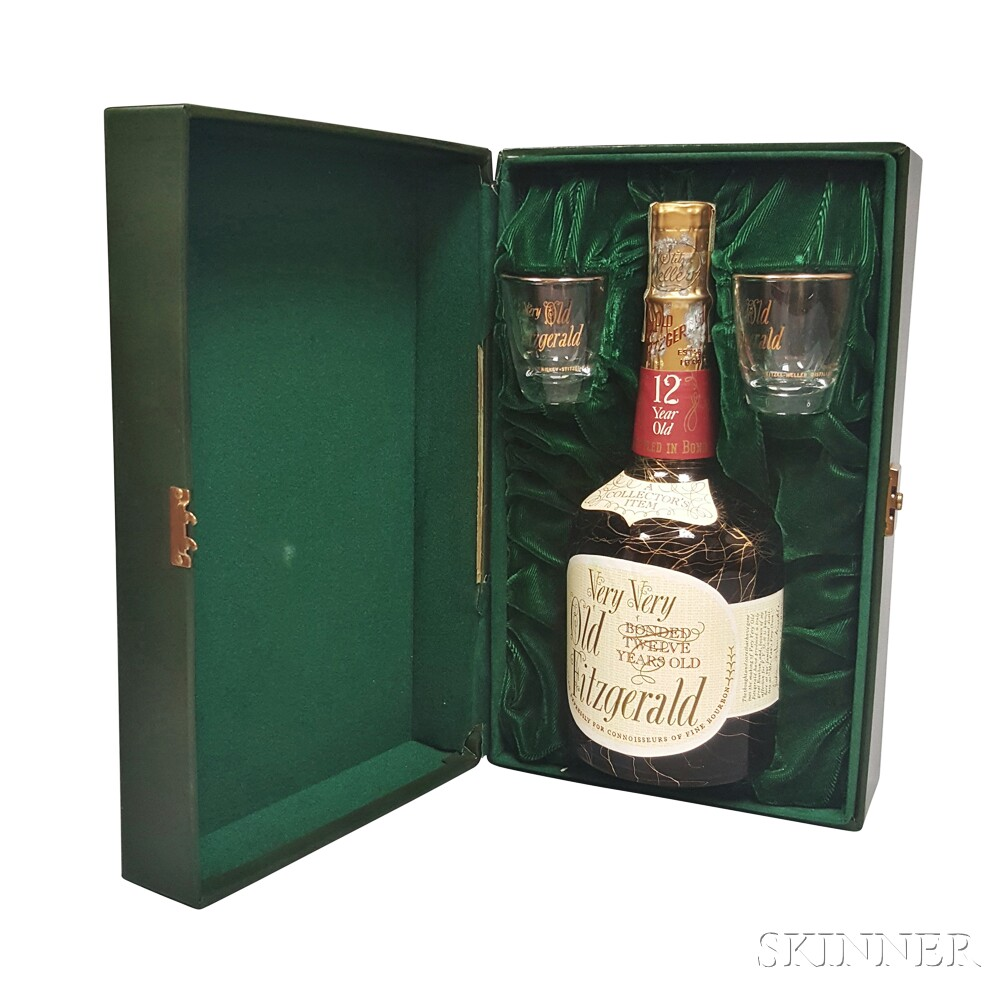
Jack Daniel's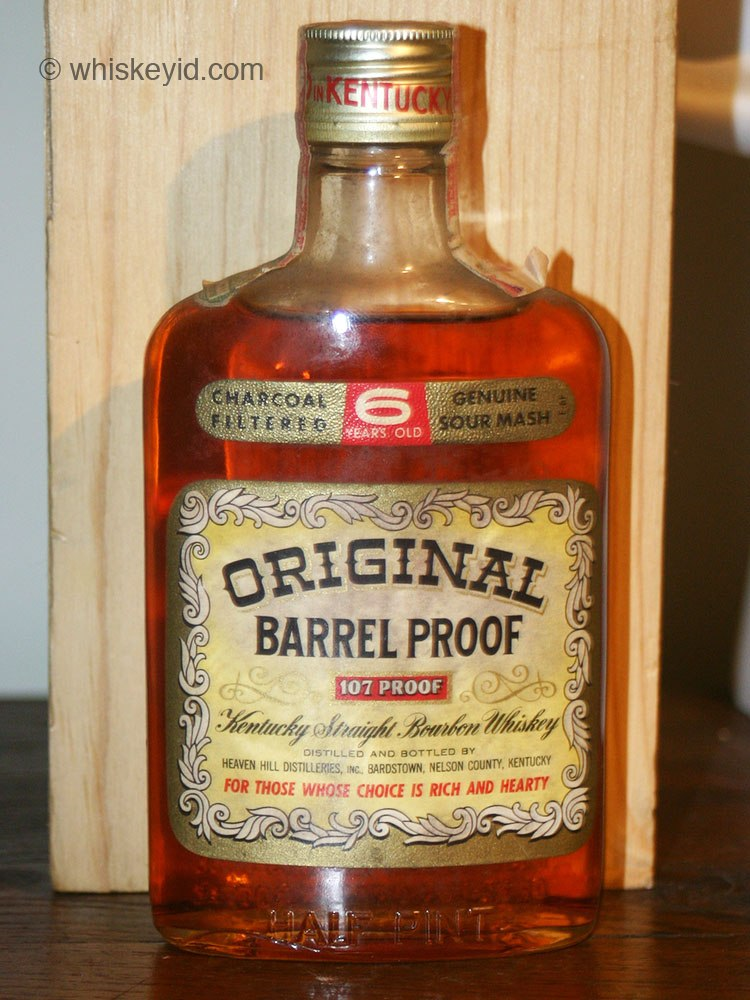
Heaven Hill Founding FamiliesThe full story
Unscrupulous rectifiers were adulterating whiskey with prune juice, iodine, and tobacco. Legitimate distillers lobbied Congress and passed the Bottled-in-Bond Act of 1897 — the first federal consumer protection law for distilled spirits in U.S. history. On the eve of Prohibition, Kentucky alone had roughly 500 registered distilleries; this was the industry's last unconstrained golden age.
To this day, "Bottled in Bond" means one distillery, one distilling season, aged at least 4 years in a federally bonded warehouse, bottled at 100 proof — the gold standard of American whiskey authenticity.
Key producers
- A. Ph. Stitzel Distillery: Stitzel-Weller Wheated Bourbons
- Jack Daniel's: Old No. 7, Lem Motlow products
- Heaven Hill Founding Families: Various Kentucky straight bourbons
Terms
- Rectifiers
- Merchants who blended and adulterated raw whiskey with colorings, flavorings, and adulterants like prune juice, iodine, or tobacco — then sold it as aged whiskey. Their practices drove the 1897 Bottled-in-Bond Act.
- Bottled-in-Bond
- A federal standard from 1897: whiskey from one distillery, one distilling season, aged at least 4 years in a bonded warehouse, bottled at exactly 100 proof. The first consumer protection law for food or drink in U.S. history.
Prohibition & the Collapse of an Industry
Prohibition shut nearly every distillery for 13 years. Just six medicinal licenses kept American whiskey legally in production.
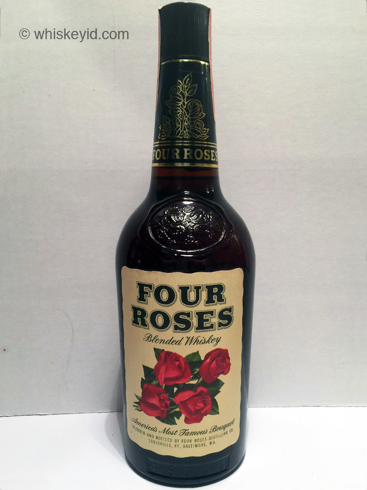
Frankfort Distilleries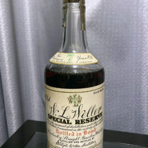
A. Ph. Stitzel Distillery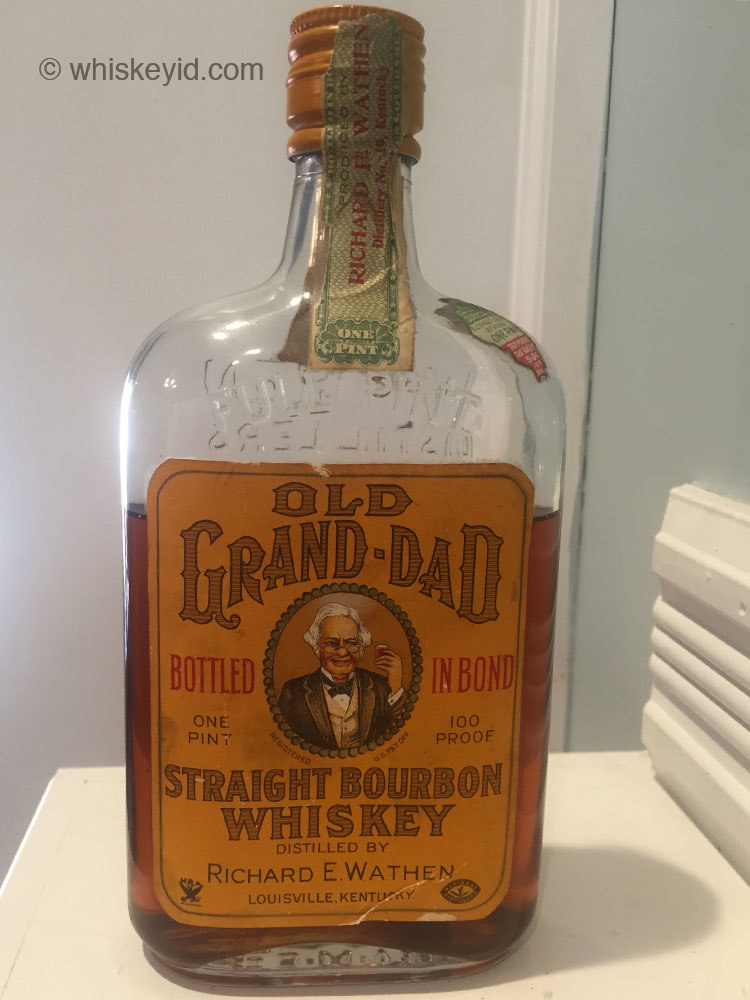
American Medicinal Spirits Co.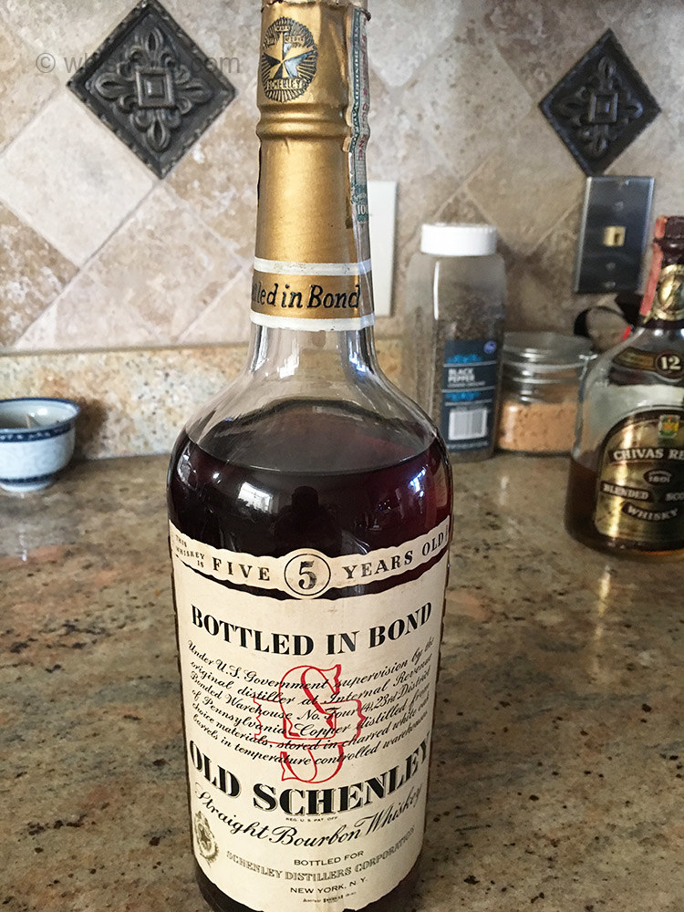
Schenley Industries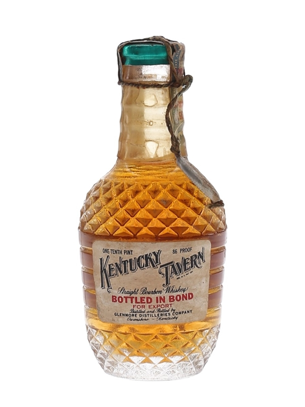
James Thompson & BrotherThe full story
The 18th Amendment took effect January 17, 1920. Nearly every distillery shuttered — Pennsylvania's 30+ commercial operations fell to zero — and the government issued just six medicinal whiskey licenses, the only legal American whiskey production for 13 years. Canadian rye and Scotch flooded in to fill the gap, reshaping consumer habits for decades after Repeal.
Prohibition-era "medicinal" bottles with Rx labels and physician's stamps are among the most historically significant American whiskey collectibles today.
Key producers
- Brown-Forman: Old Forester (medicinal Rx bottles)
- Frankfort Distilleries: Paul Jones Bourbon, Four Roses
- A. Ph. Stitzel Distillery: Old Fitzgerald, W.L. Weller
- American Medicinal Spirits Co.: Old Grand-Dad, Old Taylor
- Schenley Industries: Schenley Rye, Cream of Kentucky
- James Thompson & Brother: Glenmore Bourbon, Kentucky Tavern
Terms
- Medicinal whiskey
- Whiskey legally produced and sold during Prohibition (1920–1933) under government medical license. Doctors could prescribe a pint every 10 days. Only six distilleries held production licenses for the entire 13-year period.
Repeal & the Rise of the Big Four Conglomerates
After Repeal, the “Big Four” controlled most major brands. Heaven Hill (1935) was a rare new independent.
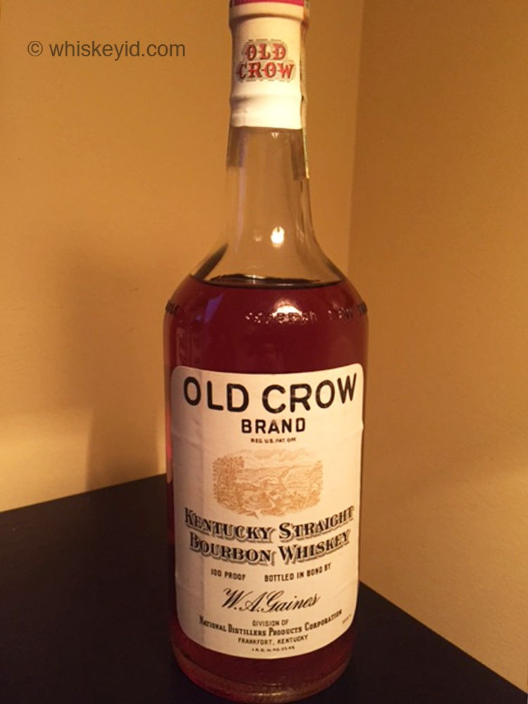
National Distillers Seagram Company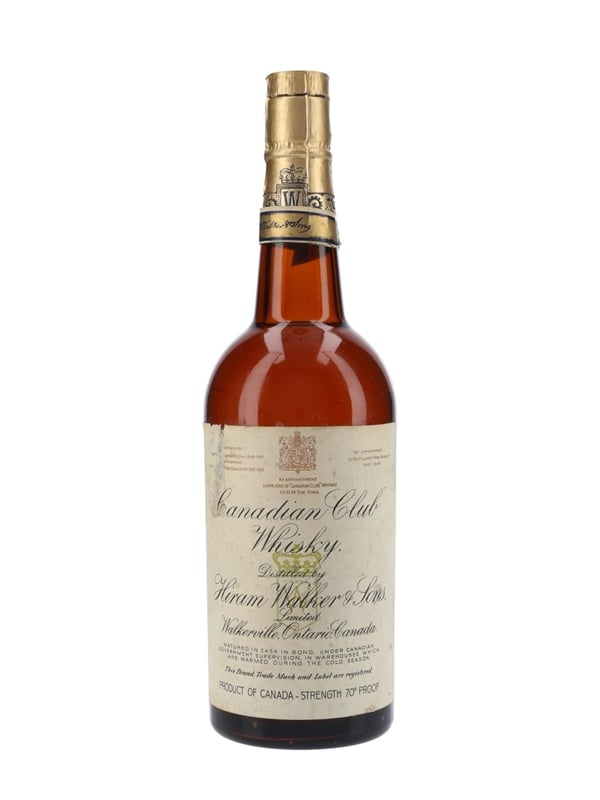
Hiram Walker Heaven Hill (independent)The full story
After Repeal, the "Big Four" — Schenley, Seagram, National Distillers, and Hiram Walker — controlled most major brands, having stockpiled aged whiskey through Prohibition. Heaven Hill, founded in 1935, was one of the few new independents. Americans, now accustomed to Scotch and Canadian rye, took two decades to fully return to straight bourbon.
Key producers
- Schenley Industries: I.W. Harper, Old Quaker, Golden Wedding Rye
- National Distillers: Old Grand-Dad, Old Crow, Old Taylor
- Seagram Company: Four Roses, Calvert, Kessler, 7 Crown
- Hiram Walker: Gooderham & Worts, Canadian Club
- Heaven Hill (independent): Evan Williams, Elijah Craig (est. 1935)
Bourbon's Golden Peak & the Decanter Era
With warehouses overflowing, Jim Beam turned to Regal China: more than 1,500 novelty decanter designs from 1955 to 1992.
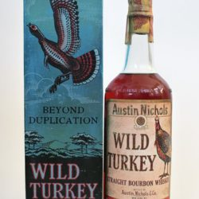
Wild Turkey (Austin Nichols) Brown-Forman Heaven HillThe full story
Post-war prosperity drove bourbon production to historic highs — too high — leaving warehouses overflowing with barrels aging longer than intended. Jim Beam's response became iconic: starting in 1955, they partnered with (and in 1968 acquired) Antioch, Illinois ceramics company Regal China to produce novelty decanters. Over four decades, more than 1,500 designs were issued — vehicles, political figures, state themes, animals, and more (2,291 with colorways and variants).
This Regal China series is the direct ancestor of the collectible market Boozy Estate covers — made at the height of American bourbon culture, with collector clubs in every state.
Key producers
- Jim Beam / Regal China: State, Executive, Political, Trophy, Centennial, Club Series (1955–1992)
- Wild Turkey (Austin Nichols): Wild Turkey 101, Wild Turkey 8yr
- Brown-Forman: Old Forester, Early Times
- Heaven Hill: Evan Williams, J.W. Dant, Fighting Cock
Bourbon's Dark Decades & the Vodka Revolution
Drinkers switched to vodka, tequila and wine. Maker's Mark and the Van Winkles kept premium bourbon alive.
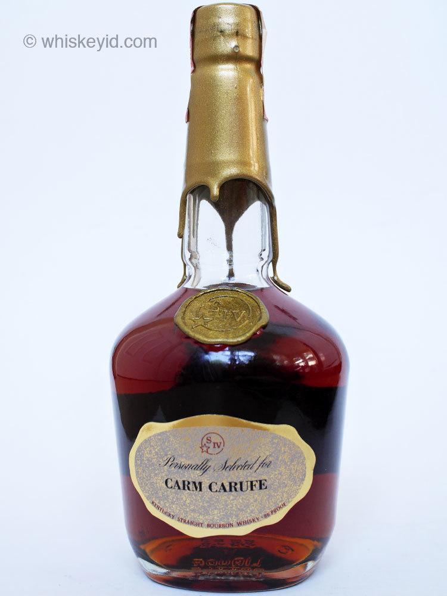
Maker's Mark Jack Daniel's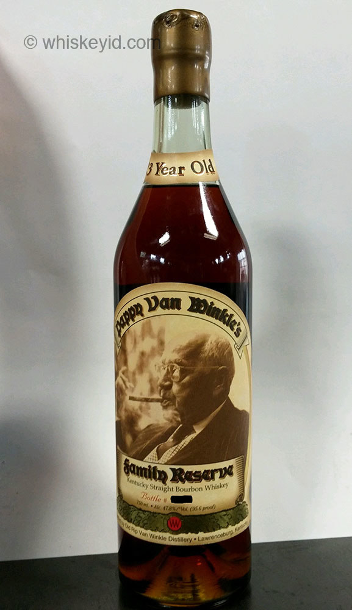
Old Rip Van Winkle Heaven HillThe full story
Young consumers rejected their parents' drinks for vodka, tequila, and wine. By the 1980s, every rye distillery in the Mid-Atlantic had closed for good — an entire regional tradition erased. But quietly, Maker's Mark and the Pappy Van Winkle family were proving there was still a market for premium, small-batch bourbon, planting seeds that would take another decade to bloom.
Jim Beam kept producing Regal China decanters through the industry's darkest decade — made while nearly every rye distillery in America was shutting down. That makes them artifacts of resilience, not just novelty.
Key producers
- Maker's Mark: Maker's Mark wheated bourbon; first national ad 1980
- Jack Daniel's: Old No. 7; grew internationally through '70s–'80s
- Old Rip Van Winkle: Pappy Van Winkle's Family Reserve (cult status begins)
- Heaven Hill: Elijah Craig 12yr launched 1986
Terms
- Small batch
- Whiskey blended from a limited selection of barrels — no legal definition, but implies careful selection from fewer than 200 barrels. The term was popularized by Jim Beam's 1992 Small Batch Collection.
- Wheated bourbon
- Bourbon using wheat as the secondary grain instead of rye. Produces a softer, sweeter, less spicy character. Classic examples: W.L. Weller, Maker's Mark, Pappy Van Winkle.
The Premium Renaissance & Small Batch Movement
Booker Noe's 1992 Small Batch Collection put premium bourbon back on the map. By 2000, fewer than 50 U.S. distilleries remained.
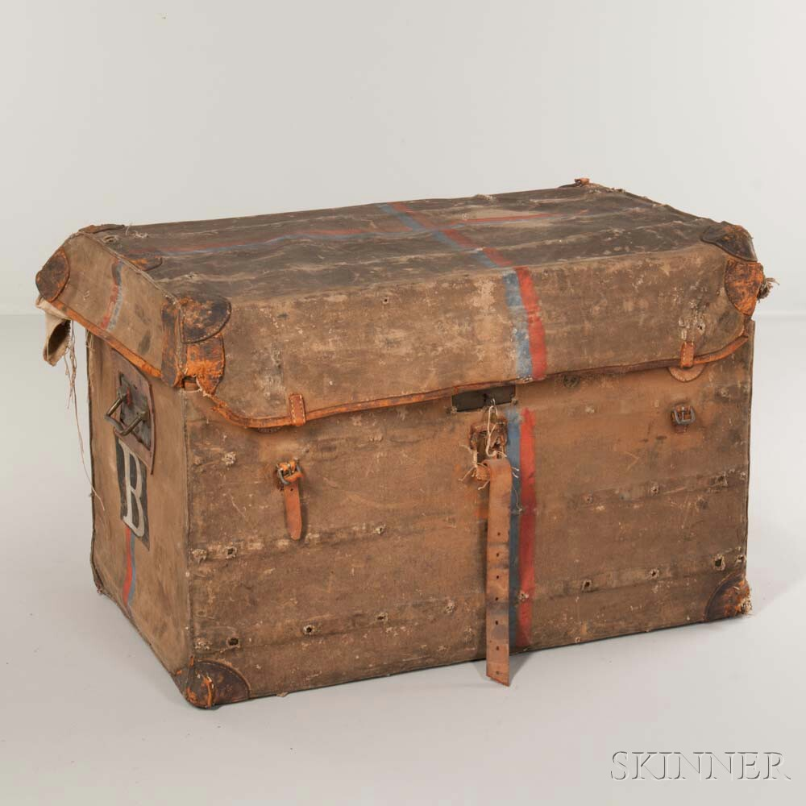
Jim Beam / Knob Creek (1992)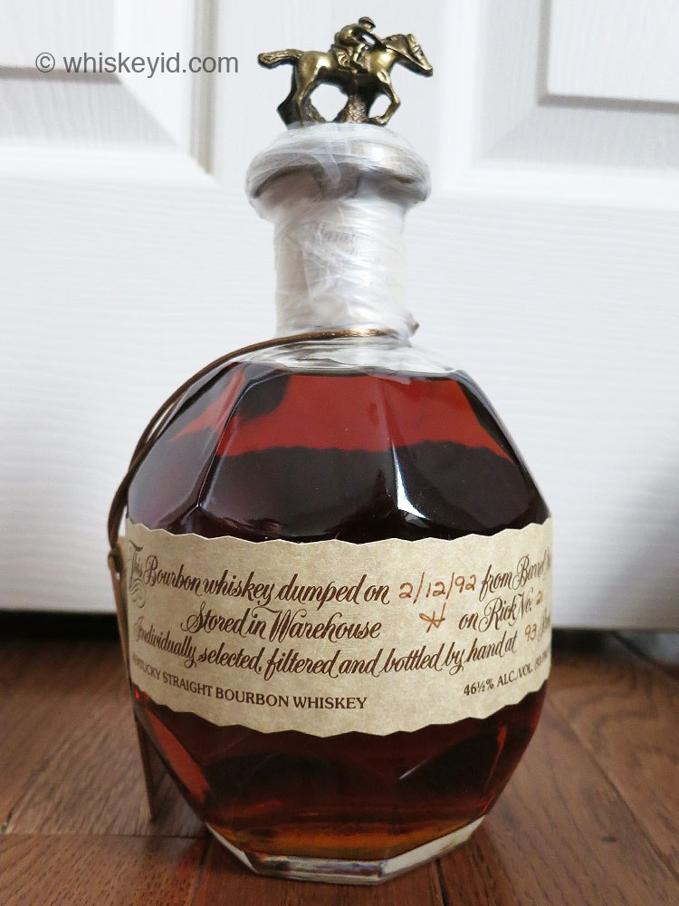
Buffalo Trace Distillery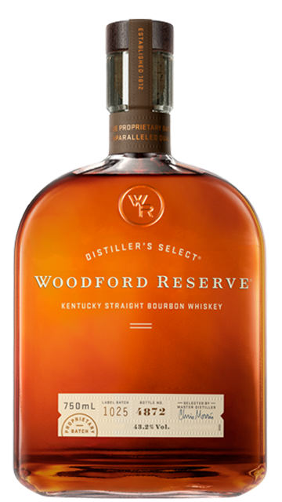
Brown-Forman / Woodford Reserve Wild TurkeyThe full story
Jim Beam's master distiller Booker Noe launched the Small Batch Bourbon Collection in 1992 — Knob Creek, Basil Hayden's, Baker's, and Booker's — and single-handedly put premium bourbon back on the map. Buffalo Trace and Woodford Reserve followed with ultra-premium releases of their own. By 2000, fewer than 50 distilleries operated in the entire U.S. — lean, premium, and positioned for a boom no one saw coming.
Key producers
- Jim Beam / Knob Creek (1992): Knob Creek 9yr, Basil Hayden's, Baker's 7yr, Booker's
- Buffalo Trace Distillery: Buffalo Trace, Blanton's Single Barrel, Eagle Rare
- Brown-Forman / Woodford Reserve: Woodford Reserve Distiller's Select (1996)
- Wild Turkey: Rare Breed (barrel proof), Russell's Reserve
Terms
- Single barrel
- Whiskey bottled from one individual barrel with no blending. Flavor varies bottle to bottle. Blanton's (1984) was the first commercially marketed single barrel bourbon.
- Barrel proof
- Whiskey bottled at its natural barrel strength, undiluted with water. Typically 110–140 proof. More flavor intensity, but also more heat. Also called "cask strength."
The Modern Boom & Craft Explosion
U.S. distilleries grew from about 200 in 2010 to over 3,000 by 2023, and collectors now trade bottles online.
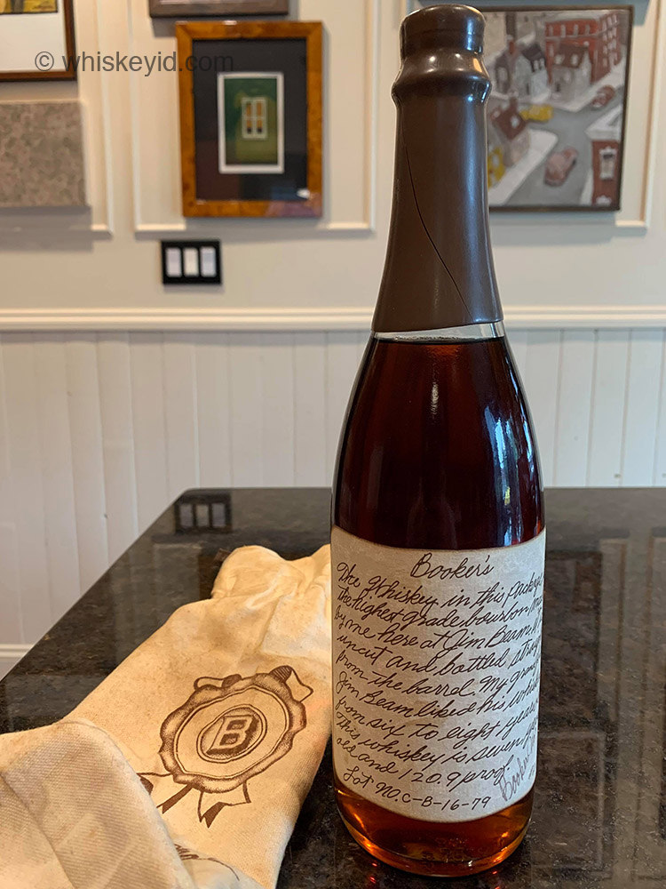
Beam Suntory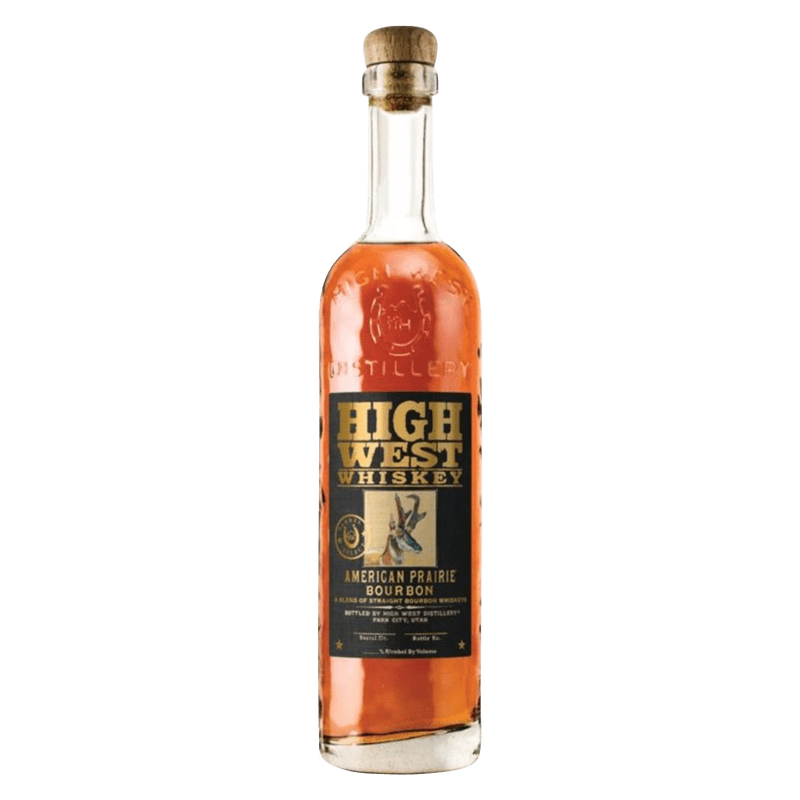
High West Distillery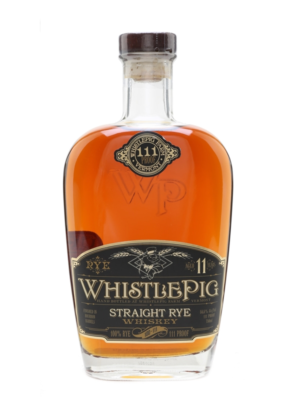
WhistlePig BaxusThe full story
From ~200 distilleries in 2010, the U.S. surged to over 3,000 by 2023, with allocated bottles like Pappy Van Winkle and the Buffalo Trace Antique Collection becoming objects of near-religious devotion. Secondary-market trading and digital provenance tools like Baxus transformed how collectors buy, sell, and store — and vintage decanters like Jim Beam's Regal China pieces found new audiences who value them as tangible American history.
The modern collector sees Regal China decanters as attainable, historically rich artifacts of the era that both defined and nearly killed American bourbon culture — increasingly documented through platforms like Baxus.
Key producers
- Buffalo Trace / Sazerac: Pappy Van Winkle, BTAC, Weller Full Proof
- Beam Suntory: Booker's, Knob Creek, Jim Beam Single Barrel
- High West Distillery: American Prairie, Rendezvous Rye
- WhistlePig: WhistlePig 10yr, Boss Hog, FarmStock
- Baxus: Blockchain-verified whiskey custody & trading